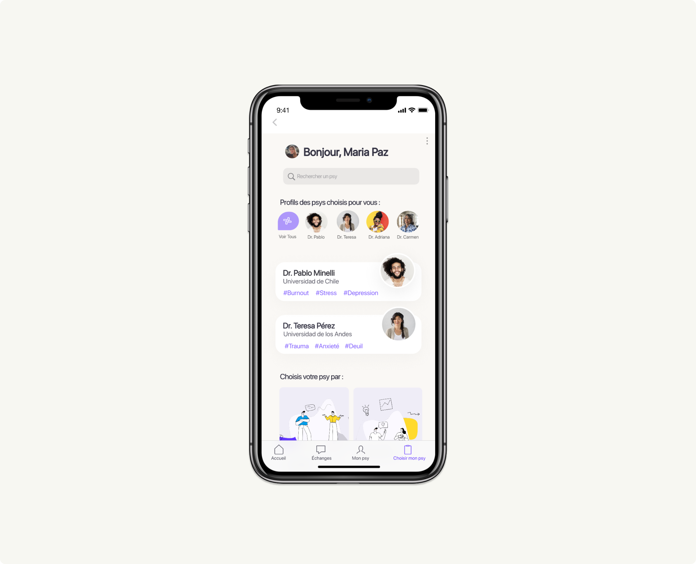
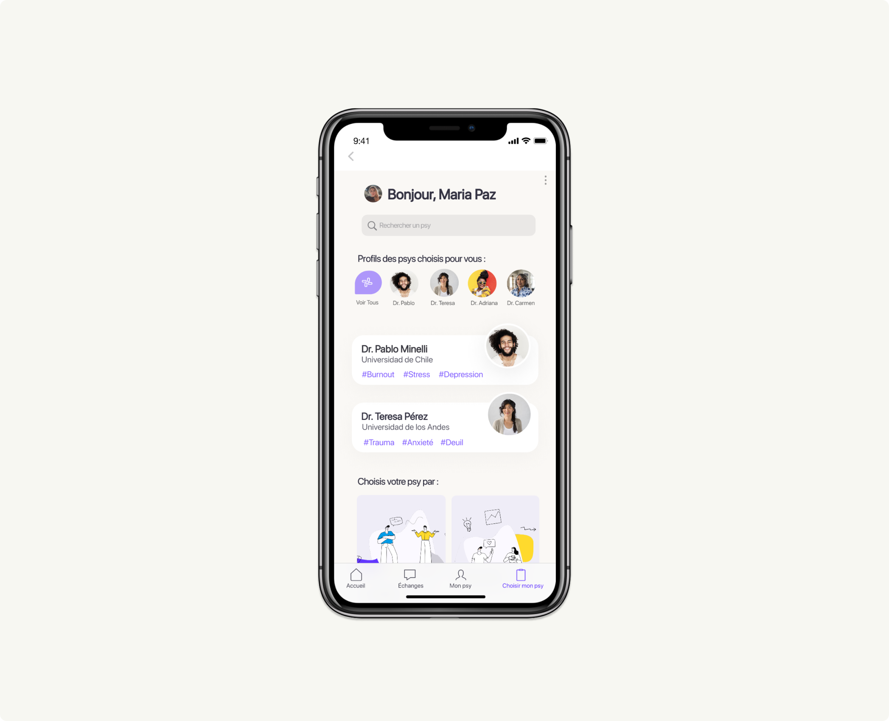

GuidedHelp - An Online Therapy Matching Application
 

Overview
GuidedHelp is a concept application that was born out of my personal experiences and the mental health challenges I faced as a foreigner during the COVID-19 pandemic. Recognizing the need for a therapist who could understand my cultural background and speak my native language, GuidedHelp aims to address these challenges. The application's primary goal is to assist users in finding online therapists who can effectively communicate in their language and share their interests. This UX case study explores the design process and user experience considerations behind GuidedHelp, with a focus on the prototype created in Figma.
Objective
GuidedHelp strives to create a supportive and inclusive platform that connects users with online therapists who can empathize with their cultural background and effectively communicate in their native language. By doing so, the application aims to enhance user comfort and overall mental well-being during therapy sessions, particularly for foreigners facing unique challenges as language barriers, social environments, among others.
Design Process:
1. Research Phase:
Understanding Personal Needs:
- Leveraging my personal experiences as a foreigner seeking therapy, I conducted introspective research to identify the specific challenges and requirements that guided the creation of GuidedHelp.
Understanding the Target Audience:
- Conducted interviews, surveys, and analyzed existing data to gain insights into the mental health needs of foreigners affected by the pandemic. Identified pain points and challenges faced by this specific user group in accessing mental health support.
Competitor Analysis:
- Examined existing online therapy platforms to identify their strengths and weaknesses, paying particular attention to features related to language preferences, cultural understanding, and personalized matching.
2. Problem Definition:
Based on personal experiences and research, the following problem statements were identified:
✷ Foreign individuals, like myself, struggle to find therapists who can relate to their cultural background and communicate effectively in their native language.
✷ Users often feel a lack of comfort and understanding when their therapists do not share their interests and experiences.
✷ Limited access to suitable mental health support hampers the recovery and well-being of foreign individuals in need.
3. Ideation and Solution Design:
Creating Personas: Developed personas based on my personal experiences and those shared by other foreigners seeking therapy. These personas helped shape the design process and ensure user-centered solutions.
Defining Features:
✷ Language Preferences: Integrated advanced search functionality to enable users to find therapists who can communicate in their preferred language.
✷ Interest Matching: Implemented a user-friendly questionnaire during the onboarding process to match users with therapists who share their interests and cultural background.
✷ Reviews and Ratings: Included a rating system to provide users with insights into therapists' expertise and previous clients' experiences.
✷ Appointment Scheduling: Designed a user-friendly interface for seamless appointment scheduling, considering different time zones and availability.
✷ Secure Communication: Prioritized data privacy and incorporated end-to-end encryption to ensure secure communication between users and therapists.
4. Prototyping and Testing:
Using Figma, I created a high-fidelity prototype that visualized the user flow and interface of GuidedHelp. The prototype underwent iterative testing, gathering feedback from potential users and stakeholders to identify areas of improvement.
To see the prototype 👉🏼 click here
5. Key Learnings:
✷ Personal experiences as a foreigner seeking therapy validated the need for GuidedHelp's features.
✷ Users appreciated the focus on language preferences, cultural understanding, and interest matching.
✷ The prototype's user-friendly design enhanced the overall experience, ensuring ease of use and a sense of comfort.
✷ Trust and confidence were established through transparent communication channels and user reviews.
Conclusion:
GuidedHelp is a concept application that emerged from my own experiences as a foreigner seeking therapy during the pandemic. By addressing the mental health challenges faced by individuals like myself, GuidedHelp aims to connect users with online therapists who understand their cultural background and can effectively communicate in their native language. The design process, fueled by personal insights and research, resulted in a high-fidelity prototype in Figma. GuidedHelp has the potential to enhance the well-being and comfort of its users by offering a tailored platform for finding and connecting with therapists online.